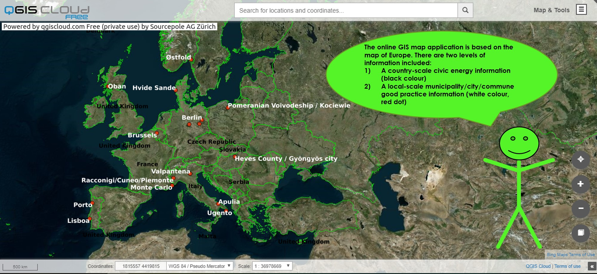
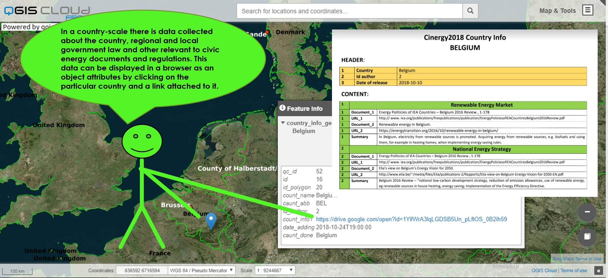
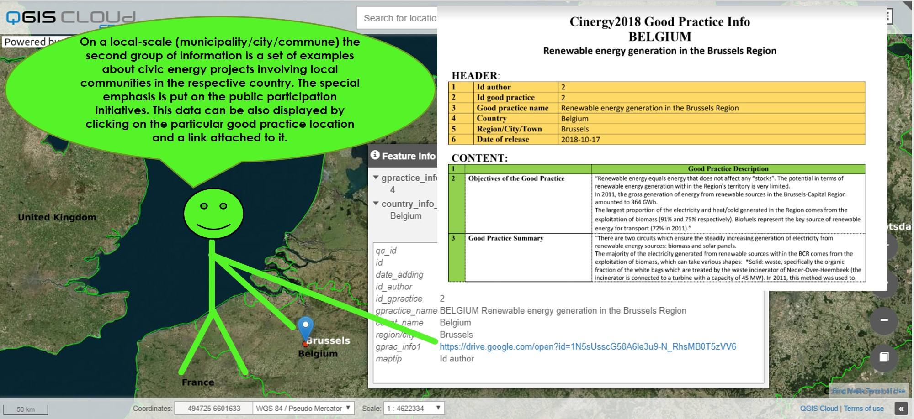

Scroll down and learn more what CIVIC ENERGY is
CINERGY2018 = CIVIC + ENERGY? What is that?
Our group project Cinergy2018, developed in May - November 2018, concerns the civic energy, which is one of the mean of the transition to sustainable and decentralised energy market and climate change mitigation. Civic energy stands for engaging communities and citizens into energy management process (planning, decision-making, production, distribution, consumption), implementing in this process the renewable energy sources.Due to the general small awareness of society on its impact on energy system the necessity of education and knowledge sharing was identified as essential challenge of the project. In order to tackle with this challenge the main target of the project was to:
- search for the information on the internet related to civic energy law regulations and good practice examples in different countries
- developing an online database and map application displaying the gathered information.
How to use the GIS map application? (it's really simple):


